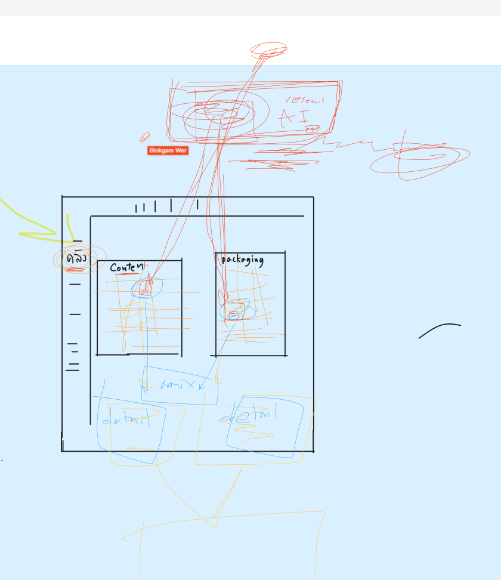
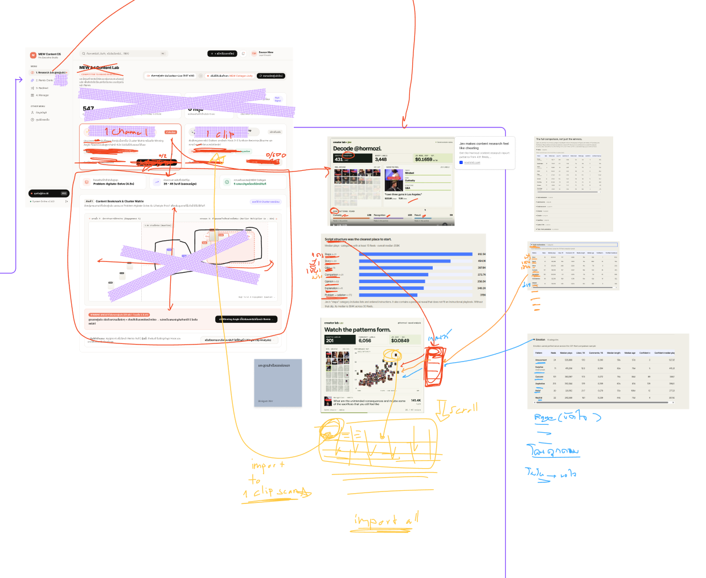
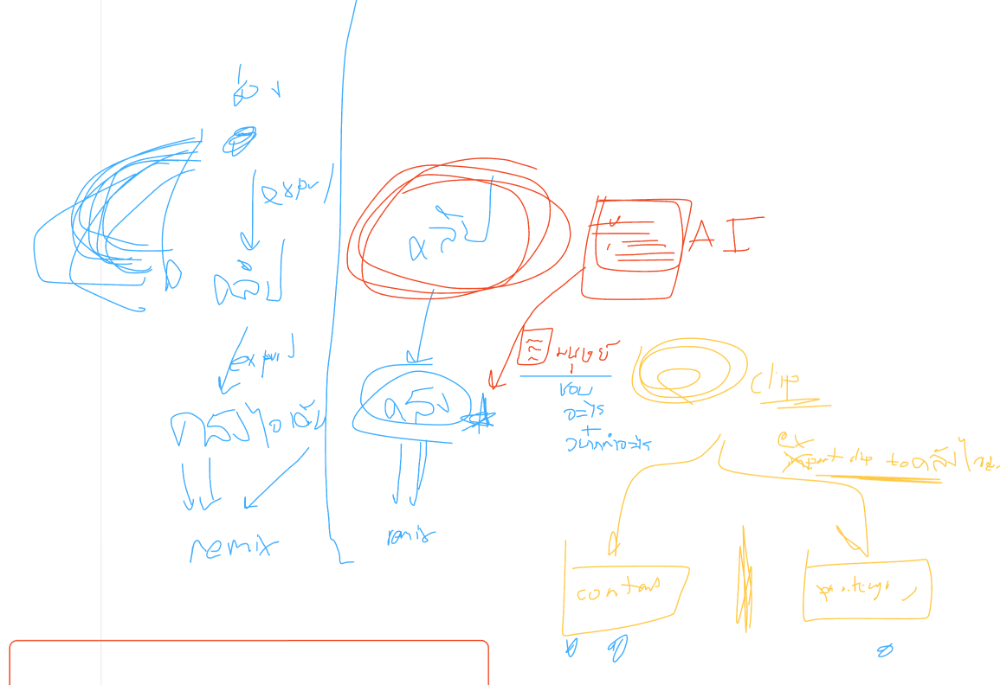

แผนผังภาพรวมการทำงาน (End-to-End Master Workflow)
คลิกที่แต่ละขั้นตอน (Node) ในแผนผังด้านล่าง เพื่อเปิดดูรายละเอียดสเปก, ฟีเจอร์ที่ต้องมี, และตัวอย่างหน้าจอทางขวา
Overview / Dashboard
ศูนย์รวมงาน: Recent Research, Vault Summary, Remix Drafts
Research Entry & Inbox
วาง URL / Upload / Scan Feed → รับคลิปเข้าคิววิเคราะห์
Research Detail / AI Analysis
แยก 2 แถบชัดเจน: [Content WHAT] vs [Packaging HOW]
Human Save Gate (Modal / Drawer)
สำคัญที่สุดFounder เลือกเก็บ [Content] / [Packaging] / [Both] + ต้องเขียน WHY
เก็บสิ่งที่พูด, ประเด็น, Mindset, ปัญหา, มุมมองที่จะเอามาเล่า
เก็บวิธีเล่า, Hook Pattern, จังหวะตัดต่อ, SFX, Visual Framing
Remix Reference Picker (Ingredients Basket)
เลือก Content ≥ 1 + Packaging ≥ 0 (เช่น C1+P1, C3+P2, หรือ Content-Only)
Remix Workspace (3 โซนหลัก)
[1. Ingredients] ↔ [2. Brand DNA / Founder POV] → [3. 2–3 Original Concepts]
Concept Detail / Script Draft
Hook, Story Beats (Beat 1-4), Proof Check, Human Prompt Tuning
Content Board & Director Brief Handoff
Draft → Needs Review → Approved → Export Director Brief / Send to MEW EDIT
เจาะลึกสเปก 10 หน้าจอ (Screen-by-Screen UX Contract)
ข้อกำหนดรายละเอียดสำหรับ Designer และ Developer ทุกปุ่ม, Input, Action และ Edge cases ที่ต้องรองรับ
ตัวอย่างจำลองสถานการณ์จริง (Founder Scenarios A, B, C, D)
ตัวอย่างจริงที่ Founder เขียนไว้เป็นโจทย์ เพื่อให้เห็นว่าข้อมูลไหลผ่านจาก Research → Save → Remix อย่างไร
คลิป "Post and forget it" (โพสต์แล้วอย่าเฝ้ายอด)
คลิปต้นฉบับ: ครีเอเตอร์บอกว่า "โพสต์เสร็จอย่าคอยเปิดยอดทุกชั่วโมง เอาเวลาไปทำคอนเทนต์ใหม่"
คลิป "The Ticking Clock" (เสียงนาฬิกาบีบคั้น)
คลิปต้นฉบับ: คลิปเล่าเรื่องลึกลับ/ระทึกขวัญ ใช้เสียงนาฬิกาเดิน ติ๊ก ๆ ๆ ตัดภาพเร็วขึ้นเรื่อย ๆ จนคนดูไม่กล้าปัดผ่าน
การ Remix ข้ามคลัง: รวม Story A (Content) + Story B (Packaging)
1. Content: Post and forget it (สาร: อย่าเฝ้ายอด/งานซ้ำ)
2. Packaging: The Ticking Clock (วิธี: Pacing บีบคั้น + reveal)
กลุ่มเป้าหมาย: ครีเอเตอร์/เจ้าของร้าน SME
มุมมอง: "คุณโพสต์เสร็จแต่งานคุณยังไม่จบ เพราะติดตอบแชท"
Hook: "คุณโพสต์คลิปเสร็จแล้ว...แต่ทำไมงานคุณยังไม่จบ?"
Beat 1-4: เช็กแจ้งเตือน → เสียเวลา → เคลียร์คอมเมนต์ → ใช้ MEW Automation
ระบบของ MEW ไม่จำกัดการรีมิกซ์แค่ 1+1 แต่รองรับการหยิบ 3 คอนเทนต์ (อย่าเฝ้ายอด + คำถามคอมเมนต์คือ market research + การทำ automate ตอบแชท) ผสมกับ 2 แพ็กเกจจิ้ง (เสียง ticking clock + โครงสร้าง numbered reveal) กลายเป็นคอนเทนต์ใหม่ "3 งานหลังโพสต์ที่คุณไม่จำเป็นต้องเฝ้าเองทั้งหมด"
ภาพสเก็ตช์ต้นฉบับจากลายมือ Founder
ภาพร่างจริงที่ Founder วาดไว้เพื่ออธิบายแก่นของ Flow ก่อนจะแปลงมาเป็นสเปกระบบฉบับนี้
1. การแยก 2 คลัง (Two Separate Vaults) sketch-1-vaults.png
ภาพร่างแสดงการแยกชัดเจนระหว่าง Content Vault (WHAT) และ Packaging Vault (HOW) โดยคลิป 1 คลิปสามารถบันทึกเข้าทั้ง 2 คลังได้

2. Research Channel vs 1-Clip Scan sketch-2-research.png
การศึกษาคลิปคู่แข่งในตลาด เพื่อดูว่าตลาดกำลังสนใจอะไร ไม่ใช่เพื่อก็อปปี้คลิปมาทำซ้ำ

3. Clip → AI → Human WHY → 2 Vaults → Remix sketch-3-save-remix.png
สเก็ตช์สำคัญที่แสดงหัวใจของระบบ: วิดีโอผ่าน AI → มนุษย์เขียน "ชอบอะไร + จะเอาไปทำอะไร" → แยกเข้า 2 คลัง → ดึงมารวมใน Remix Workspace
